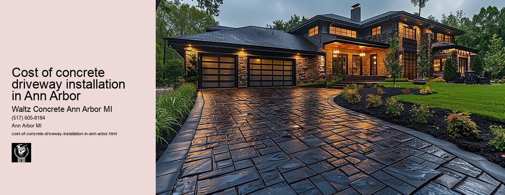

News
Concrete Driveway Installation Ann Arbor Mi
Concrete Driveway Installation Ann Arbor Mi
Choosing the right contractor for installation
Cost of concrete driveway installation in Ann Arbor
Permit requirements for driveway installation in Ann Arbor
The process and timeline of concrete driveway installation
Different types of concrete used in driveways
Maintenance and Repair of Concrete Driveways in Ann Arbor Mi
Maintenance and Repair of Concrete Driveways in Ann Arbor Mi
Preventive maintenance tips for durability
Common causes for concrete driveway damage
Professional companies offering repair services in Ann Arbor
Doityourself versus professional repairs
Costs associated with repairing a concrete driveway
Designs and Styles of Concrete Driveways in Ann Arbor Mi
Designs and Styles of Concrete Driveways in Ann Arbor Mi
Popular design trends for driveways
Considering climate factors when choosing a design or style
Unique customizations available for concrete driveways
Influence of home architecture on driveway design
Stamped stained and decorative options
Environmental Impact of Concrete Driveways in Ann Arbor Mi
Environmental Impact of Concrete Driveways in Ann Arbor Mi
Carbon footprint associated with concrete production
Use of sustainable materials in concrete driveways
Drainage considerations to reduce environmental impact
Local regulations regarding environmentally friendly driveways
Potential use of permeable or porous pavement
Alternatives to Concrete Driveways in Ann Arbor Mi
Alternatives to Concrete Driveways in Ann Arbor Mi
Asphalt driveways and their proscons
Paver stone driveways and their benefitsdrawbacks
Gravel or crushed stone as an alternative option
Comparing costs between different driveway materials
Resinbound surfaces as emerging technology
About Us
Contact Us

Cost of concrete driveway installation in Ann Arbor
Cost of concrete driveway installation in Ann Arbor
Title: Understanding the Cost of Concrete Driveway Installation in Ann Arbor
If you are a homeowner in Ann Arbor planning to install a new concrete driveway or replace an old one, you might be wondering about the cost involved. The cost of installing a concrete driveway in Ann Arbor can vary significantly based on several factors such as the size of your driveway, local labor costs, and the complexity of your project.
The first factor that influences the cost is the size of your driveway. In general, contractors charge per square foot when it comes to concrete driveways installation. If you have a long or wide driveway, or if you want to create additional parking spaces, then your overall cost will inevitably increase. This price typically includes labor and materials needed for site preparation, grading, compacting soil base layer, reinforcing meshes or fibers for added strength (if required), pouring concrete and finishing it.
Next comes local labor costs. Labor rates can fluctuate depending on where you live within Michigan. In some areas like Ann Arbor which has higher living standards than other parts of Michigan, these rates may be relatively higher due to cost-of-living differences.
The complexity of your project could also influence the final quote offered by your contractor. A straightforward job where access is easy and minimal groundwork preparation is needed will likely be less expensive than complex projects requiring intricate designs, curves or slopes. Additionally, if there are any obstructions like trees or structures that need removing before installation begins this could potentially add to the overall expense.
Alternatives such as decorative finishes like stamping or staining can further inflate prices although they do contribute towards enhancing aesthetic appeal and property value. Consequently while plain gray concrete remains most economical choice for homeowners on strict budgets; those with larger budgets often opt for colored concrete driveways which offer unique patterns resembling brickwork paving stones etc.
It's important to remember that while upfront costs may seem high; investing in a professional quality installation can save money in the long-term. A well-installed concrete driveway can last for decades with minimal maintenance, making it a cost-effective choice over time.
In conclusion, while estimating an exact price for your project may be challenging without specific details; homeowners in Ann Arbor can expect to pay anywhere from $4 to $8 per square foot of concrete driveway installation based on current market rates. However since every project has unique requirements; it's always advisable to reach out to several local contractors and obtain detailed quotes before deciding on your investment.
Remember that while cost is important, so too is finding an experienced, reputable contractor who will deliver high quality workmanship. Choosing wisely not only ensures you get value for money spent but also guarantees that new driveway serves as durable and visually pleasing addition to your property for many years.
Choosing the right contractor for installation
Cost of concrete driveway installation in Ann Arbor
Frequently Asked Questions
What is the average cost of concrete driveway installation in Ann Arbor, MI?
The average cost of installing a concrete driveway in Ann Arbor, MI ranges between $4 to $8 per square foot. However, the exact price may vary depending on the complexity and size of the project.
Are there any factors that can influence the cost of concrete driveway installation in Ann Arbor, MI?
Yes, several factors such as the size and shape of your driveway, thickness of the concrete slab, type of finish used (stamped or smooth), whether old material needs to be removed first, and local labor costs can all affect the total cost.
Does weather affect when I can install a concrete driveway in Ann Arbor?
Yes. Concrete should not be poured in extremely cold temperatures or during heavy rainfall. Summers are usually ideal for pouring concrete but professionals can take necessary precautions during other seasons too.
How long does it typically take to install a concrete driveway?
A standard-sized residential driveway takes about one to two days for preparation and another day for pouring. It then needs to cure for at least a week before you should drive on it.
Cost of concrete driveway installation in Ann Arbor